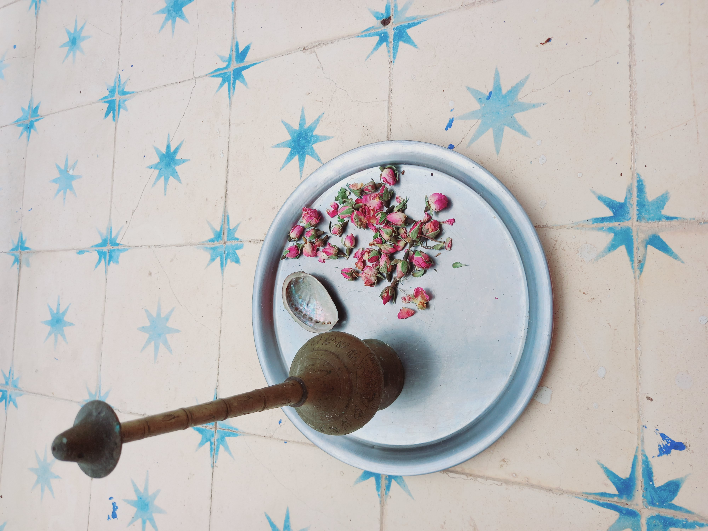
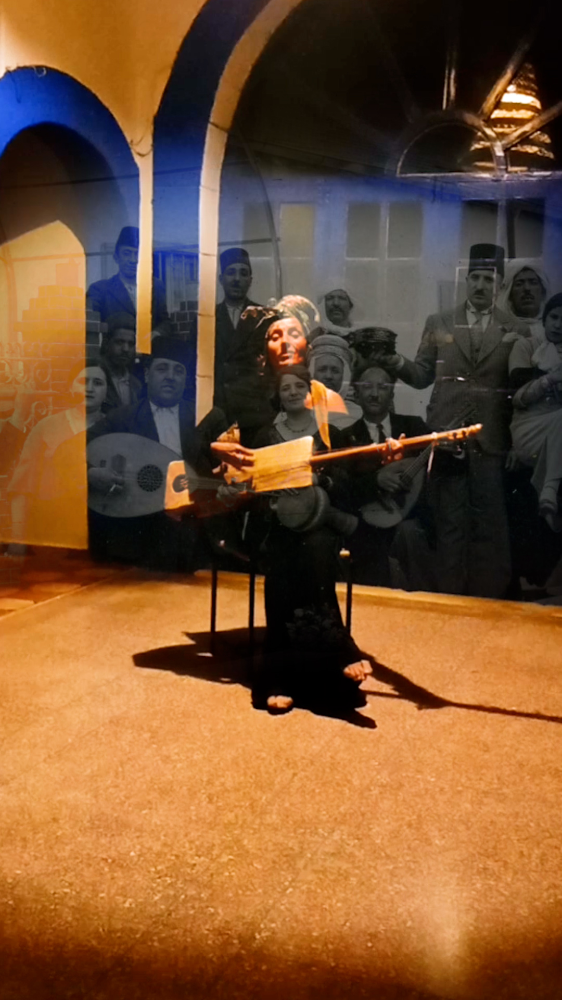
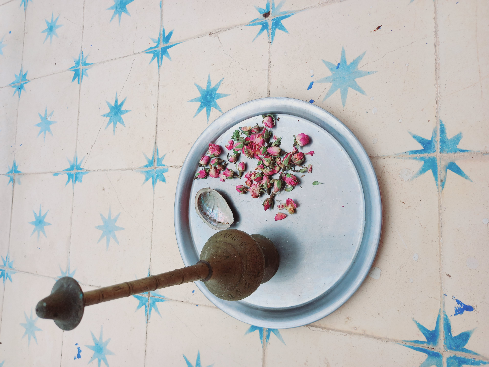
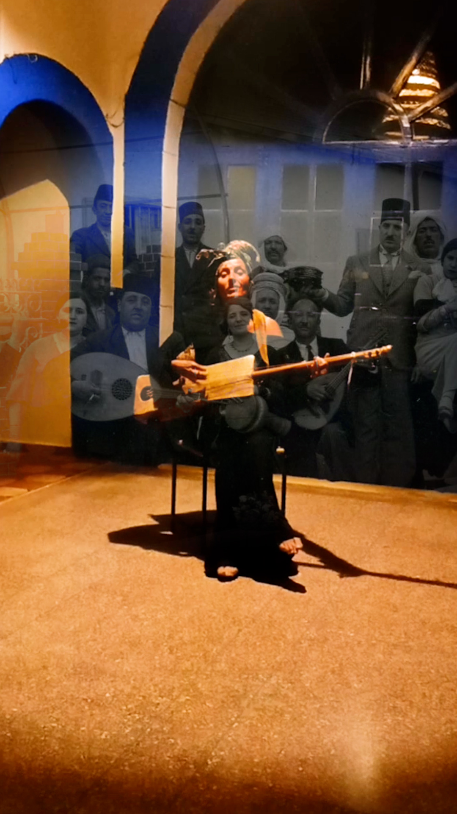

Indika
Solo Voix-Guembri/Percussions & Loops
 



Le chant des racines
Musicienne-Auteure-Compositrice-Interprète : Indiana Améziane
Présente INDIKA un solo Voix-Guembri/Percussions & Loops.
Sortie prévue Septembre-Octobre 2025.
Indika c'est le chant des racines. Ce projet marque une transition, après un bouleversement. Une voix profonde vibre, des textes racontent une traversée pour se souvenir du parfum des origines, se souvenir de rencontres humaines, musicales, empreintes de paysages, de contrées sauvages, de fragrances et bien d'autres mouvements.
INDIKA parle d'un héritage, de ce que l'on choisit de perpétuer.
INDIKA se chante et ondule entre l'intime & l'universel. Un besoin profond de marquer le temps d'une transition vers une seconde peau, oser la mutation, laisser partir ce qui peut être transformé et chanter la vie.
Informations techniques
Processus de création
En 2025, deux résidences marquantes accompagnent la création d'INDIKA :
La première au Maroc à Sidi Kaouki/Essaouira, où l'inspiration puise dans les paysages et les rencontres de cette terre d'exception.
La seconde dans le sud de la France autour de la composition & l'arrangement de 10 textes qui formeront le cœur de ce projet musical.
Remerciements
Merci au continent Africain pour sa bonté, sa sensualité, sa générosité, terreau d'exception pour cultiver le projet INDIKA.
L'artiste
Indiana Améziane
Musicienne-Auteure-Compositrice-Interprète
Voix, Guembri, Percussions & Loops
Suivre le projet Indika
Pour être informé de la sortie d'Indika et des prochaines représentations, contactez-nous.
Nous contacter